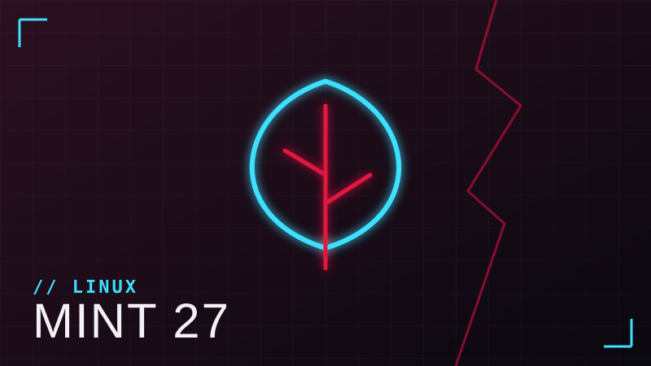

Linux
Linux Mint 23 virou Linux Mint 27
O próximo Linux Mint, que usava o nome provisório “23 Alfa”, passa a se chamar Linux Mint 27 “Adrien”. A previsão é para o Natal de 2026, com base no Ubuntu 26.04 LTS. O número da versão agora acompanha o ano, não haverá mais versões intermediárias e o sistema terá um lançamento por ano.
Fonte: It’s FOSS